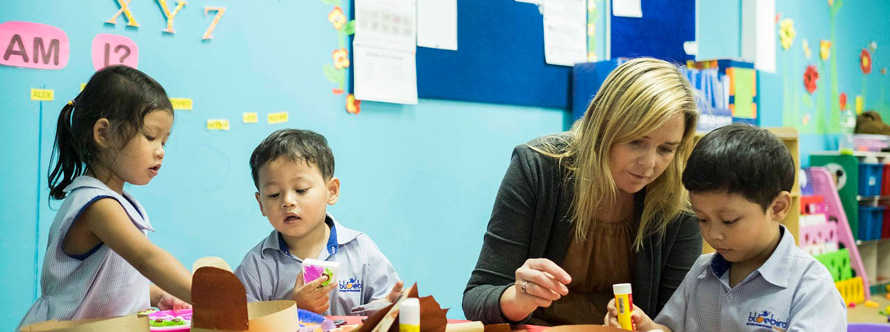

Quiénes somos
Playground es un Centro Privado de Educación Infantil situado en pleno centro de Sevilla donde atendemos y educamos a niños y niñas hasta los 3 años de edad. Ofrecemos un horario amplio y flexible, adaptado a las necesidades individuales y posibilitando la conciliación laboral y familiar.
Nos basamos en nuestro propio Proyecto Educativo, innovador y en continua evolución, con una amplia experiencia en el sector educativo y con un personal cuidadosamente seleccionado.
Apostamos por un trabajo muy profesional buscando la satisfacción y confianza de las familias, lo que nos permite diferenciarnos de otros centros y ser siempre elegidos en primera opción.
Para padres
- Atención psicológica gratuita
Contamos con el apoyo de un Psicólogo tanto para realizar el seguimiento evolutivo de algún niño o niña que se precise como para asesorar a padres y educadores. También ofrece charlas, sobre diversos temas relacionados con la población infantil, dirigidas a las familias. - Charlas y talleres
Periódicamente, y de forma gratuita, se organizan charlas formativas para padres, atendiendo cada curso intereses comunes sobre temas como el periodo de adaptación, alimentación, rabietas, control de esfínteres...
Para niños
- Servicio de comedor
Con cocina propia que ofrece una dieta personalizada, adaptada a cada edad, sana y equilibrada. - Servicio de madrugadores
Fuera del horario lectivo nuestro Centro cuenta con un Servicio de madrugadores que posibilita la conciliación familiar y que puede ser utilizado por todos los niños y niñas que precisen ampliar su horario de entrada de forma puntual o continua.
Este centro educativo cubre las necesidades básicas de los más pequeños, y los estimulan pedagógicamente para lograr su desarrollo integral a nivel físico y psíquico.